Kdo je kdo
Dvě sestry řeší laskavé záhady na chalupě u babičky a dědy i doma ve vsi. Každý obrázek je nakreslený v kódu v Pythonu, stejné kresby pro komiks i pro hru.
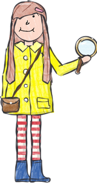
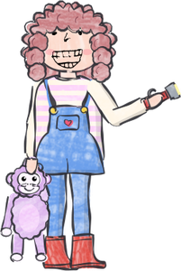
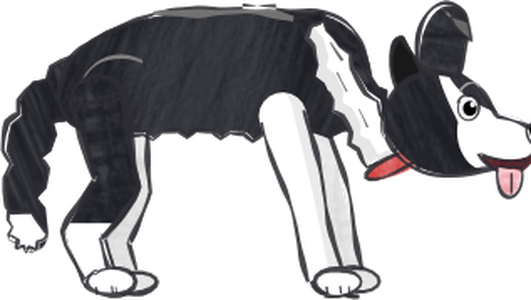
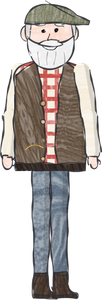
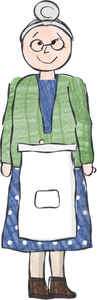
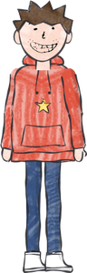
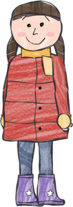
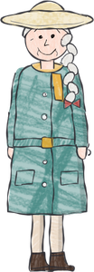
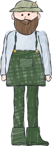
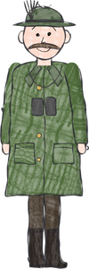
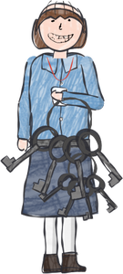
Z komiksu do hry
Každý příběh je nejdřív vytištěný komiks na čtení před spaním. Druhý den si holky stejný příběh zahrají na počítači, kde přibudou hádanky, které v komiksu nejsou.
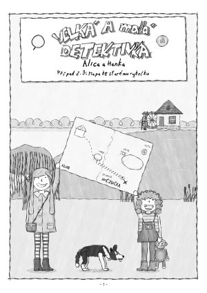
1. PřečtiRučně kreslený komiks, vytištěný jako sešitek.
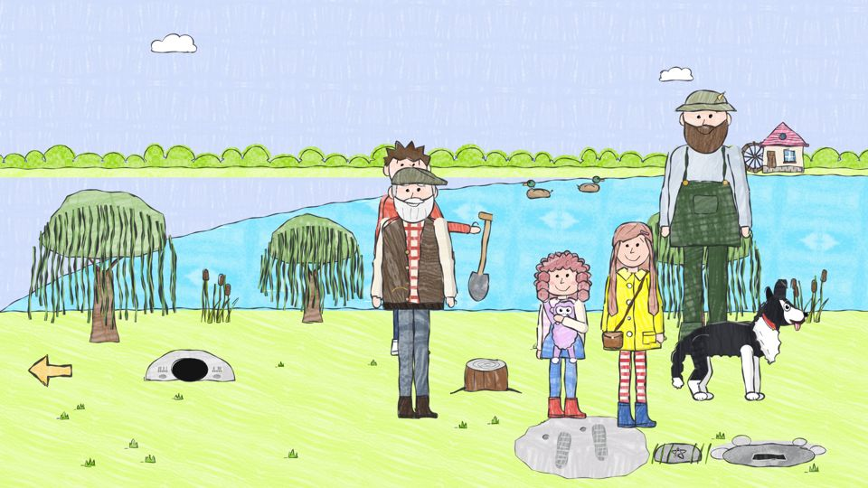
2. ZahrajKlikáním chodíš, prohlížíš a povídáš si. Když nevíš kudy kam, poradí pes.
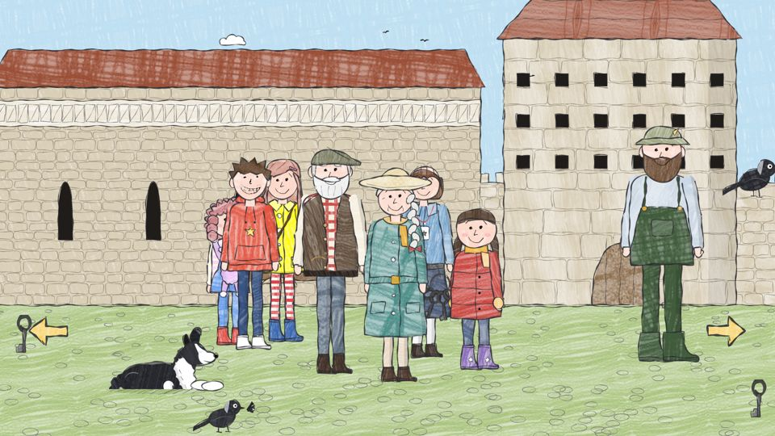
3. VyřešLogické hádanky, ve kterých se nedá prohrát: krok zpět, znovu, zeptej se Joeyho.
Příběhy
První série má 16 příběhů, od podzimu do dalšího léta, a spojuje je dědův klub z dětství, Klub Hvězdička. Příběhy 1–14 jsou hotové jako komiks i jako hra. Klikni na příběh a podívej se dovnitř.
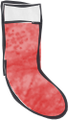
Pro malé ručičky
- Stačí jedno kliknutíŽádné nabídky sloves. Velké věci na klikání a ručička místo šipky.
- Nic strašidelnéhoNedá se prohrát, nic nespěchá. Každý „pachatel“ je zvíře nebo hodný člověk.
- Nevíš kudy kam? Klikni na psaJoey začmuchá a dojde k tomu, co je potřeba udělat.
- Dvě detektivkyHraje se za obě sestry. Některé hádanky zvládne jen ta malá.
- Česky i anglickyVelké ručně psané titulky, aby mohl číst i dospělý.
- Ukládá se samoHra se uloží v každé místnosti a „Pokračovat“ naváže tam, kde jsi skončila.